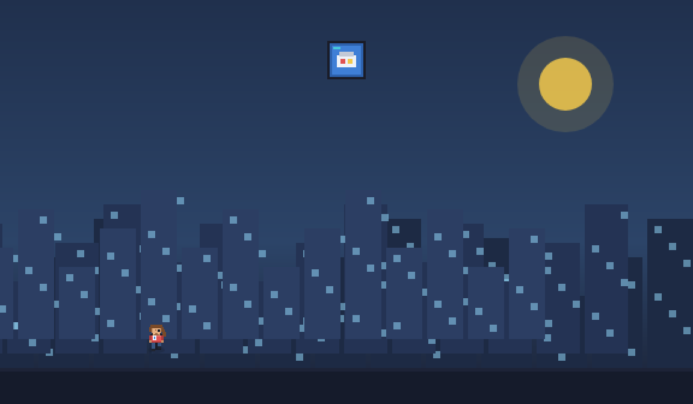
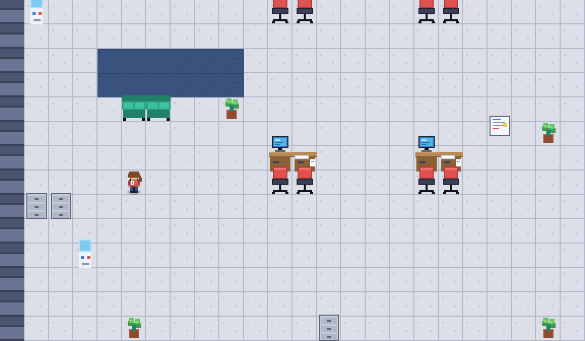
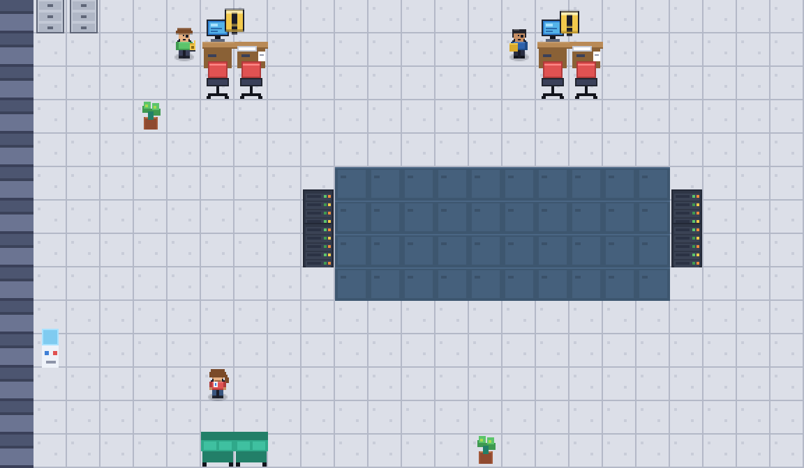
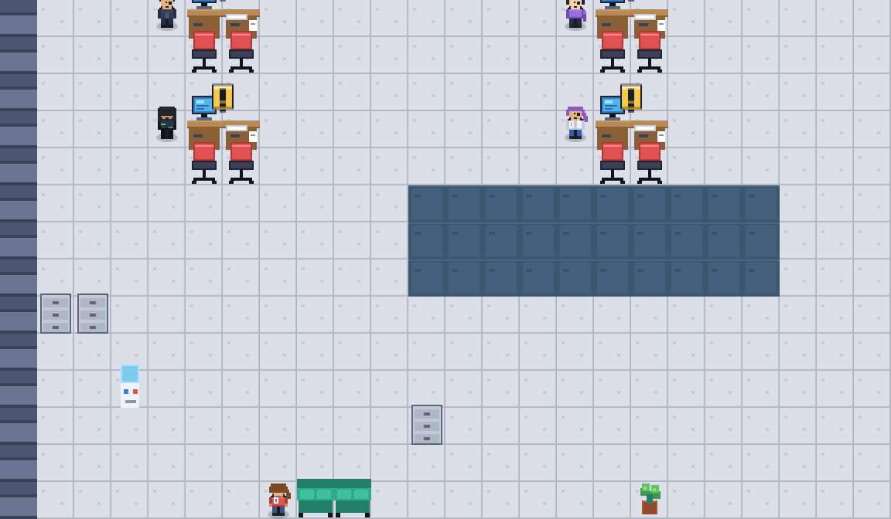

Game edukasi RPG sebagai media visualisasi profesi bidang Informatika untuk siswa kelas X (Fase E). Jelajahi 10 divisi profesi di tiga lantai perusahaan teknologi TechCorp, selesaikan misi, kumpulkan bintang, dan temukan kariermu.
IT Support, Web Developer, Graphic Designer, Network Engineer, Database Administrator, Data Analyst, Software Engineer, UI/UX Designer, Cyber Security, dan AI Specialist.
Tiga babak per profesi dengan mode simulasi langkah, kuis pemahaman, dan penyusunan alur kerja.
Setiap misi membuka kartu berisi deskripsi tugas, jurusan kuliah, sertifikasi, dan jalur karier.
Seluruh aset pixel art dan efek suara dibangkitkan secara prosedural: tanpa berkas eksternal, dapat dijalankan tanpa internet.




| Komponen Kurikulum | Implementasi di dalam game |
|---|---|
| Deskripsi Umum Fase E — wawasan profesi informatika SK Kepala BSKAP No. 032/H/KR/2024 |
Konsep RPG: pemain berperan sebagai staf magang (role-play) pada 10 divisi berbeda. |
| Elemen Dampak Sosial Informatika (DSI) — aspek ekonomi | Sistem ekonomi: koin per misi, gaji bulanan ilustratif, dan catatan belajar pada setiap promosi. |
| Tujuan Pembelajaran Bab 8 — rencana studi lanjut dan karier Buku Informatika Kelas X (Mushthofa dkk., 2019) |
Fitur Ensiklopedia Karier: jurusan kuliah, sertifikasi, dan jalur karier setiap profesi. |
| Elemen Praktik Lintas Bidang (PLB) | Tiga mode misi: penyusunan prosedur kerja, pengujian konsep, dan dokumentasi solusi. |
W A S D atau tombol panah untuk berjalan,
tombol A/Spasi untuk berbicara dan berinteraksi, dan Esc
untuk menjeda. Pada perangkat sentuh, joystick dan tombol aksi muncul otomatis.
Setiap divisi dianggap tuntas bila ketiga babaknya minimal Bintang 2 (★★☆) —
semua divisi di satu lantai harus tuntas untuk naik jabatan dan membuka lantai berikutnya.